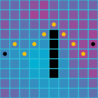
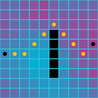
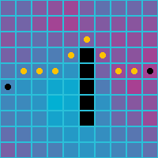
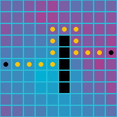
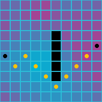
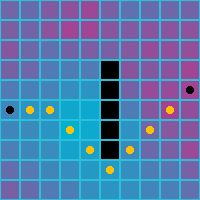

Path Finding
This article describes the path finding in Grids 2.
The method AStar is used to find the shortest possible path in a grid. The path finding method takes a grid, a starting point, a goal, a few tuning parameters, and returns a list of points that represents the path.
This is the method with all the arguments:
public static IEnumerable<TPoint> AStar<TPoint>(
IGrid<TPoint> grid,
TPoint start,
TPoint goal,
Func<TPoint, TPoint, float> heuristicCostEstimate,
Func<TPoint, bool> isAccessible,
Func<TPoint, IEnumerable<TPoint>> getConnectedPoints,
Func<TPoint, TPoint, float> neighborToNeighborCost)
Here is a simple call using the above method in a rect grid:
var path = Algorithms.AStar(
grid,
start,
goal,
(p,q) => RectPoint.ManhattentNorm(p - q),
c => true,
RectPoint.GetOrthogonalNeighbors,
(p, q) => 1);
The rest of the tutorial will explain what you need to do to make this call and how the various parameters work.
Calling the AStar method
You will typically have some information about whether a cell is accessible, and how much it costs to travel through the cell. One way to do this is to define your own cell and use this cell in your grid.
For example, you can make a cell like this:
public class PathCell : SpriteCell
{
public bool IsAccessible { get; set; }
public float Cost { get; set; }
}
Use it instead of the default SpriteCell on your cell prefab.
However, this is not strictly necessary, since the path-finding algorithm takes custom functions, and you are free to give it any function that can give the required information. For the rest of the article, we will assume that the cell above is used.
Work out what types all your parameters should be. (If you are fluent in generics and C# interfaces, this step is probably just making a mental note or two.)
All the parameter types will depend on the grid that pass as the first parameter. To work out the other types, follow these steps:
- The point type
TPointis determined by the number of dimensions of your grid. For 2D it will be GridPoint2, and for 3D GridPoint3 . It can also be a custom type if you defined your own grid point type. heuristicCostEstimateis a function that takes two points and returns a float value.isAccessibleis a function that takes a point and returns a bool.getConnectedPointsis a function that takes a point and returns a list of points.neighborToNeighborCostis a function that takes two points and returns a float.
Write a method or lambda expression to decide whether a cell is accessible or not.
If all cells are accessible, you can pass in the lambda expression c => true (it always returns true, regardless of the cell).
Otherwise, if you implemented your own cell as above, you can access the IsAccessible property in the lambda expression. This will make the function skip points that cannot be reached.
var path = Algorithms.AStar(
grid,
start,
goal,
(p,q) => RectPoint.ManhattanNorm(p - q),
p => grid[p].IsAccessible,
RectPoint.GetOrthogonalNeighbors,
(p, q) => 1);
You can also write a method instead of using the lambda expression. This is preferable if your access logic is more complex.
public bool IsCellAccessible(GridPoint point)
{
return grid[point].IsAccessible;
}
You can then call the AStar method like this:
var path = Algorithms.AStar(
grid,
start,
goal,
(p,q) => RectPoint.ManhattanNorm(p - q),
IsCellAccessible,
RectPoint.GetOrthogonalNeighbors,
(p, q) => 1);
Write a lambda expression or method to get all the neighbors of a point. You can go from a point to a neighbor of that point without going through another cell. You can read more about neighbors in Neighbors, and find in that article a list of predefined static methods defined for common situations. One is the method GetOrthogonalNeighbors .
Below is what the path finding algorithm returns for various neighbor setups. Note that the cell costs are not taken into account.
| Orthogonal | Diagonal | Orthogonal and Diagonal |
|---|---|---|
 |
 |  |
Write a lambda expression or method for determining the true cost of reaching two points if they are neighbors.
If you want the cost between all neighbors to be the same, then you can simply use the expression
(p, q) => 1.Another common possibility is to use the Euclidean distance between points. This will tend to take parts that seem more natural.
The euclidean norm is defined for rect and hex grids: EuclideanNorm(GridPoint2) and EuclideanNorm(GridPoint2) . To get the distance between two points, calculate the norm on their difference:
var distance = Norm(p - q);
Here is how using the euclidean distance affects the path when you use all 8 neighbors. (When you use only 4 neighbors, the euclidean distance is the same between all four neighbors, so it is the same as using a constant cost between cells.)
| Orthogonal and Diagonal | ||
|---|---|---|
|  |
A third possibility is to use costs for cells. The algorithm requires the cost between two cells; to get this, we take the average of the costs of each cell.
(p, q) => (grid[p].Cost + grid[q].Cost) / 2
Here is how the paths look when weighted costs are used. Note the preferred path is now through the blue cells, the cells with lower cost.
| Orthogonal | Diagonal | Orthogonal and Diagonal |
|---|---|---|
|  |  |  |
Write a lambda expression or method for a cost heuristic between two points. The cost heuristic should always be smaller or equal than the real distance. Here are the heuristic costs you should use in typical situations:
| Grid properties | Cost | Heuristic |
|---|---|---|
| Rect grid, orthogonal neighbors | (p,q) => 1 |
(p,q) => RectPoint.ManhattanNorm(p - q) |
| Rect grid, diagonal neighbors | (p,q) => 1 |
(p,q) => RectPoint.ChebyshevNorm(p - q) |
| Rect grid, orthogonal and diagonal neighbors | (p,q) => 1 |
(p,q) => RectPoint.ChebyshevNorm(p - q) |
| Hex grid, orthogonal neighbors | (p,q) => 1 |
(p,q) => RectPoint.HexNorm(p - q) |
| Any grid, irregular neighbors | (p,q) => 1 |
(p,q) => 1 |
| Rect grid, any neighbors | (p,q) => RectPoint.EuclideanNorm(p - q) |
(p,q) => RectPoint.EuclideanNorm(p - q) |
| Hex grid, any neighbors | (p,q) => PointyHexPoint.EuclideanNorm(p - q) |
(p,q) => PointyHexPoint.EuclideanNorm(p - q) |
| Any grid | (p,q) => (grid[p].Cost + grid[q].Cost)/2 |
Use the same heuristic as for (p, q) => 1 but multiply it with the minimum cost between neighbors. |